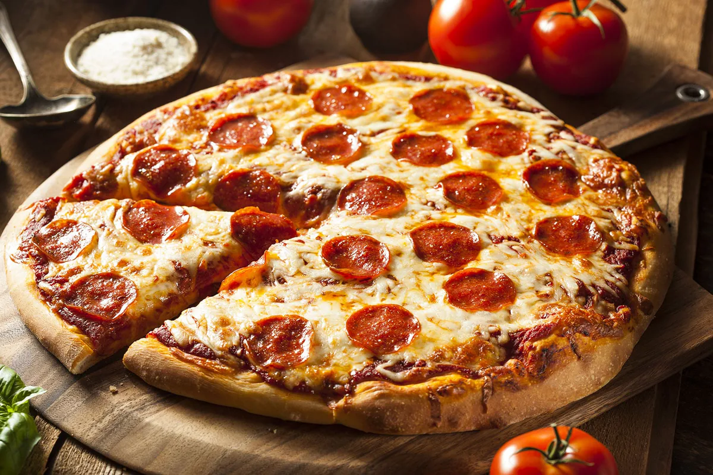

Making My Home-Made Pizza
March 10, 2020

Pizza dough is a yeasted dough which requires active dry yeast, warm water, and a little time to rise. For this recipe, you'll need flour, salt, olive oil, and your favorite toppings. 1. In a large bowl, dissolve yeast and sugar in warm water. Let stand until creamy, about 10 minutes. 2. Stir salt and oil into the yeast mixture. Mix in flour one cup at a time. 3. Knead the dough on a lightly floured surface until smooth and elastic. 4. Place dough in a well-oiled bowl, cover with a damp cloth, and let rise until doubled, about 1 hour. 5. Preheat oven to 450 degrees F (230 degrees C). 6. Punch down the dough and form a tight ball. Allow to rest before shaping. 7. Roll out into a circle on a lightly floured counter. 8. Transfer to a pizza pan or baking sheet. 9. Spread sauce, cheese, and toppings. 10. Bake until crust is golden and cheese is bubbly. 11. Let cool slightly before slicing. 12. Serve with red pepper flakes if you like heat. 13. Store leftovers in the fridge. 14. Nutrition Calories: 1691 Fat: 65 grams Carbs: 211 grams Fiber: 12 grams Sugars: 60 grams Protein: 65 grams. 15. Enjoy!